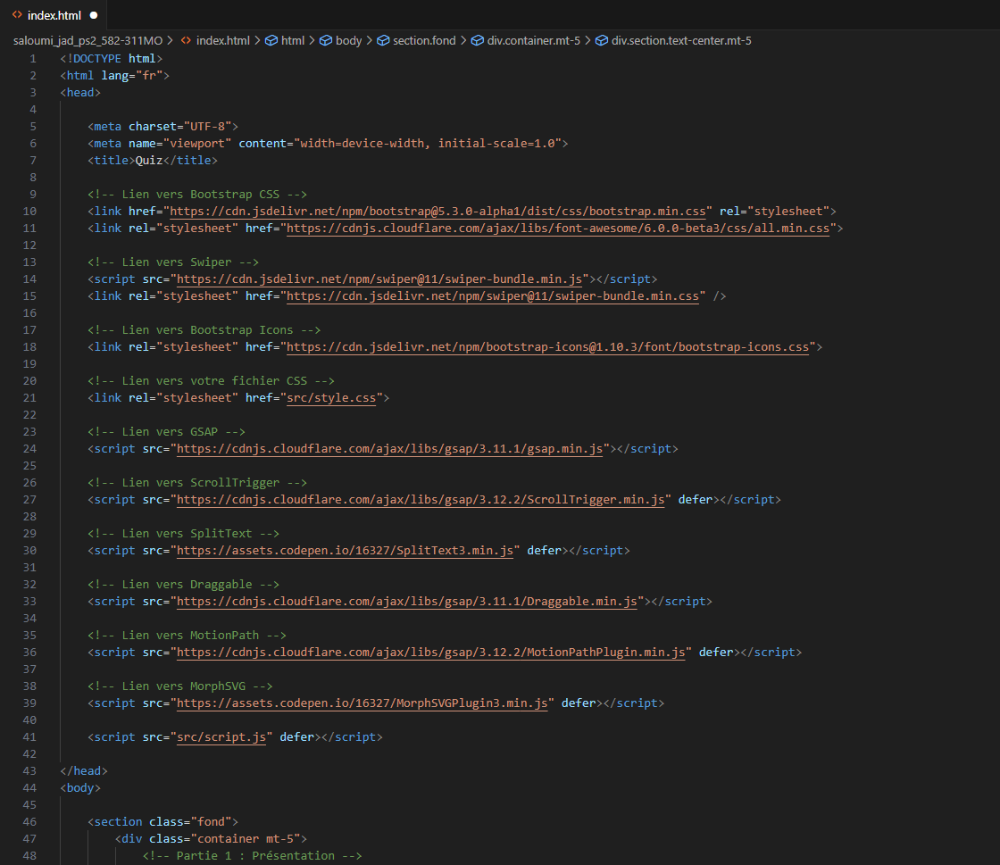
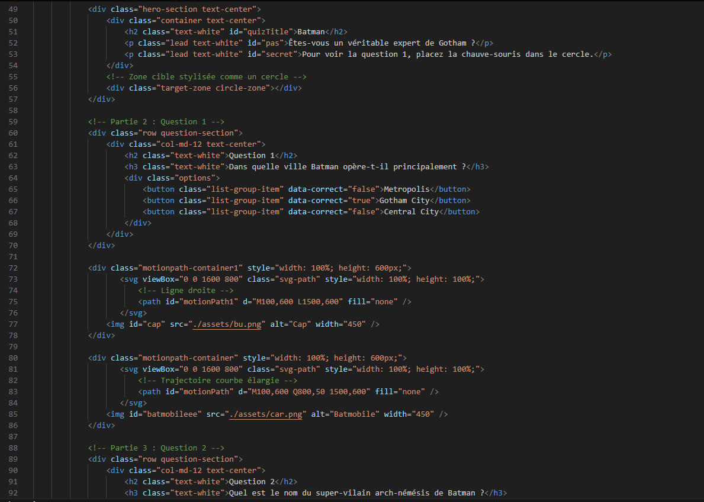
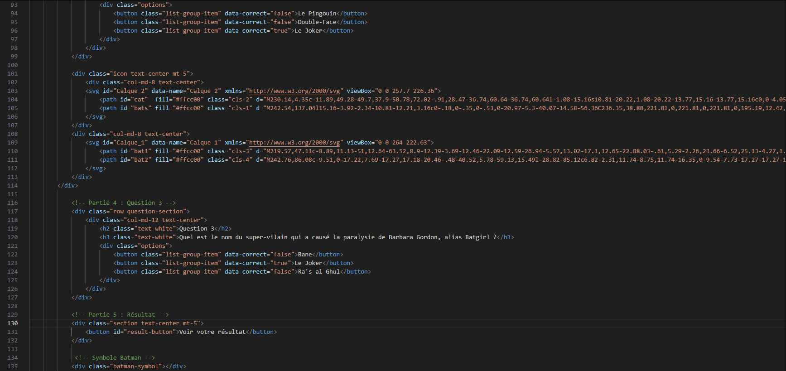
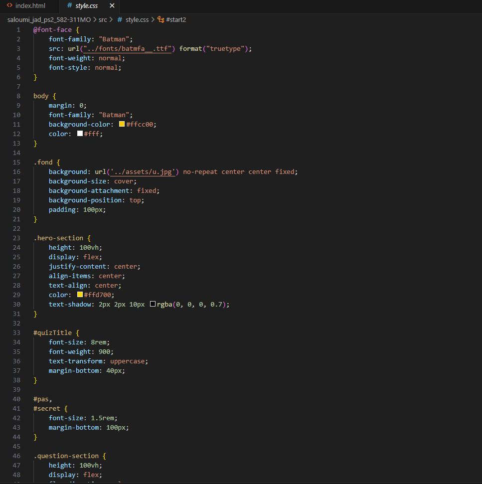
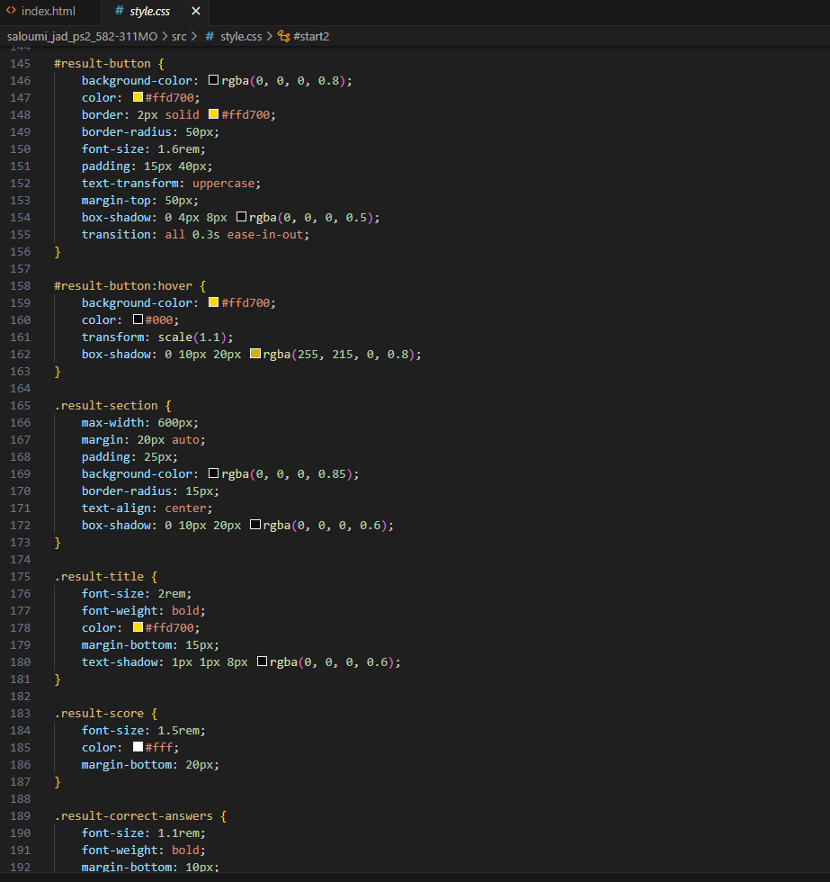
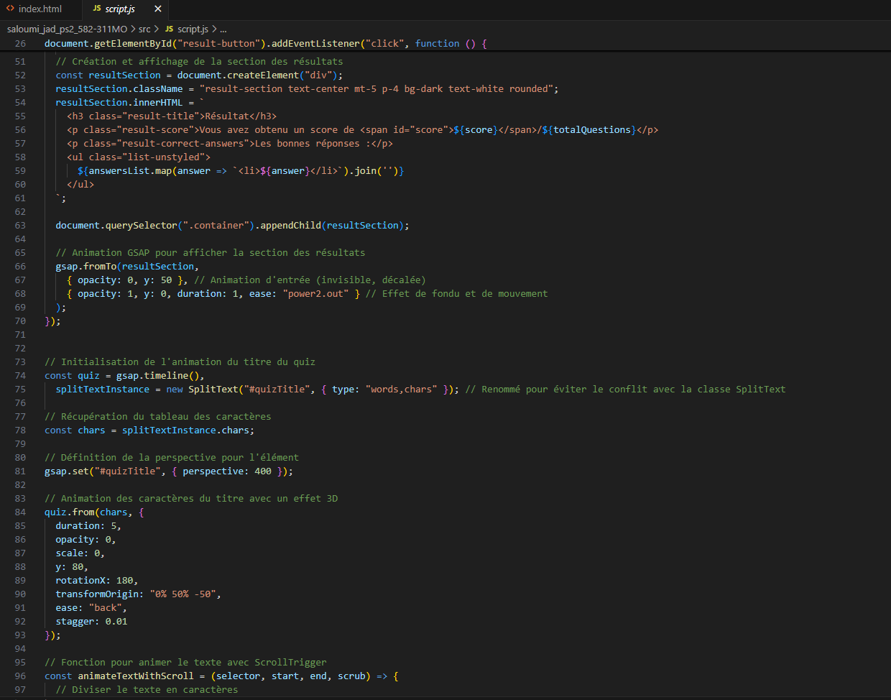
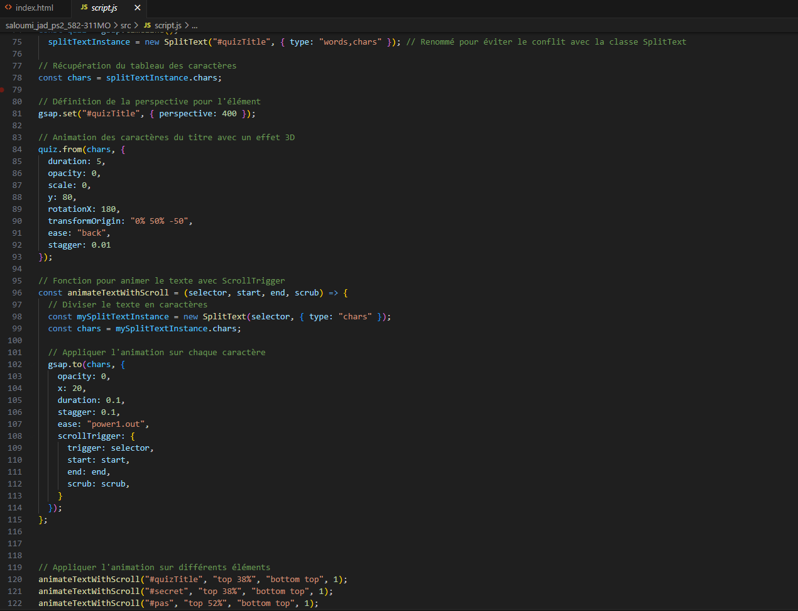
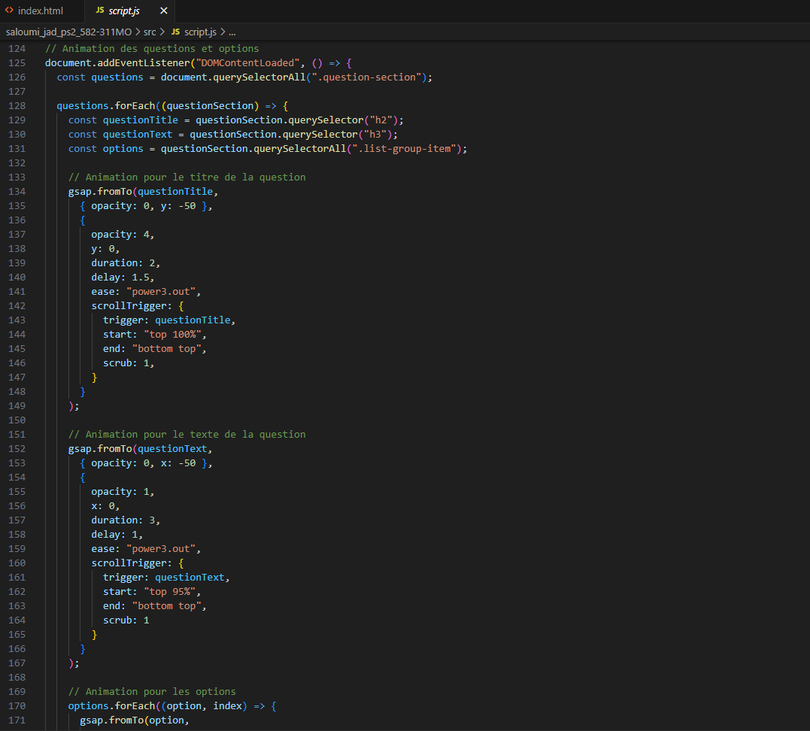
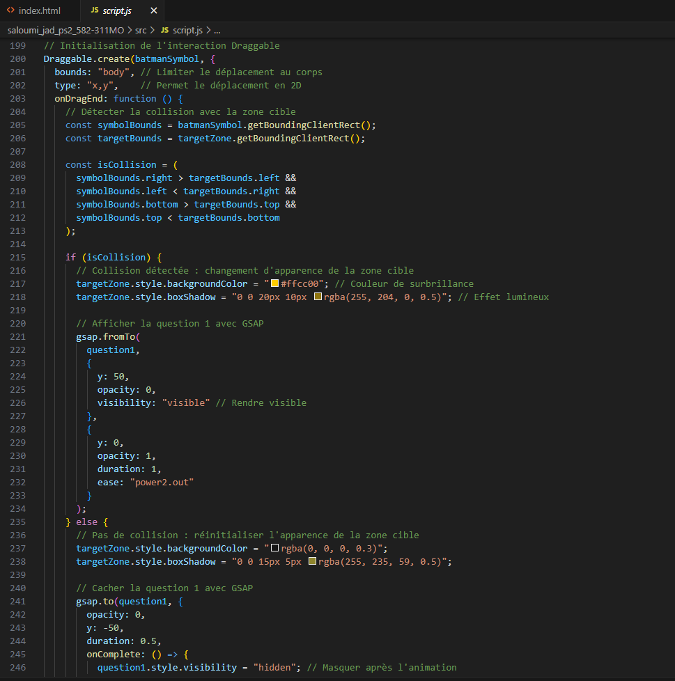

Cours : Web 3
Description courte : Projet personnel de création d’un quiz interactif sur l’univers de Batman.
Description longue : Le professeur nous a demandé de créer un site web comprenant des questionnaires et des animations avec GSAP, en faisant preuve de créativité et en soignant le design. J’ai choisi le thème de Batman pour mon projet, animé les questionnaires avec GSAP et travaillé sur le design et l’interactivité du site.
Rôle : Designer et développeur web
Technologies : HTML, CSS, JavaScript et GSAP
Type : Individuel
J’ai créé la structure complète du quiz : les titres, les questions, les boutons de réponse et les sections pour les résultats. J’ai également intégré les motions paths et les morph SVG pour les animations interactives.



J’ai travaillé sur l’esthétique du quiz en m’inspirant du style visuel de Batman. J’ai utilisé une palette de noir, blanc et jaune pour rappeler les couleurs emblématiques du héros. J’ai aussi choisi une typographie en lien avec l’univers de Batman, afin de renforcer l’ambiance générale. L’objectif était de rendre le quiz à la fois immersif, lisible et cohérent avec le thème.


J’ai ajouté toute la logique interactive du quiz en JavaScript. J’ai créé les animations des titres, des sections, des textes et des questions à l’aide de GSAP. J’ai aussi utilisé Draggable pour permettre aux éléments de se déplacer et rendre l’expérience plus dynamique et agréable. L’ensemble du code gère les transitions entre les questions, les scores, et les effets d’apparition/disparition des éléments.



